rough
By area red, yellow and grey: fix first, fix, worth a look
What to fix most important first
- Looks like a button, isn't oneFix first
div.sendlooks like a button but is adivwith a text cursor: it can't be focused, ignores Enter and screen readers don't announce it. How to fixUse/coleoni-polish
How to fixUse/coleoni-polish<button type="submit">(or<a href>if it navigates) with the same style. - “Inter” only shows for people who have it installedFix first
The CSS asks for
Interwith no@font-face. It's installed on this machine, so it looks right here; most visitors get the next font in the stack.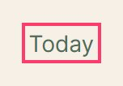
How to fixServe it (woff2 from your own domain, only the weights in use,/coleoni-typefont-display: swap) or drop it from the stack and use the system font on purpose. - Contrast 2.12:1 on “With cream cheese and toaste”Fix first
#A9AFA4on#FBF8F2, 14px. Needs 4.5:1 (WCAG AA).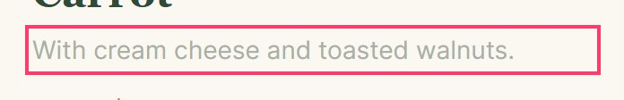
 How to fixThe same color a little darker:/coleoni-color
How to fixThe same color a little darker:/coleoni-color#6D7368(4.63:1). - Contrast 2.91:1 on “Six flavors, three sizes and”Fix first
#8B8F87on#F6F0E6, 18px. Needs 4.5:1 (WCAG AA). How to fixThe same color a little darker:/coleoni-color
How to fixThe same color a little darker:/coleoni-color#6B6F67(4.55:1). - Contrast 2.92:1 on “Priya S., ordered a carrot c”Fix first
#8A8F86on#F6F0E6, 13.5px. Needs 4.5:1 (WCAG AA). How to fixThe same color a little darker:/coleoni-color
How to fixThe same color a little darker:/coleoni-color#6A6F66(4.57:1). - 5 more pairs with low contrastFix first
3.12·3.34·3.40·3.71·3.93How to fixSee the contrast table below./coleoni-color - Scrolls sideways at 390pxFix first
166px wider than the screen, starting at
article.card.How to fixColumns with/coleoni-layoutrepeat(auto-fill, minmax(min(100%, 16rem), 1fr)),min-width: 0on flex children, tables inside anoverflow-x: autowrapper. - 7 different corner radiiFix
In use:
4px×3,6px×1,8px×1,10px×1,12px×4,16px×1,20px×1. Close values (10, 12, 16) read as mistakes, not choices.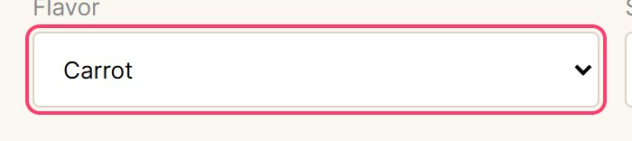

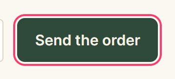
How to fixA scale of 3 or 4 tokens (/coleoni-polish--r-sm,--r-md,--r-lg,--r-pill), and each component picks one. - Inner corner doesn't follow the outer oneFix
An element with a
12pxradius inside a16pxone,10pxfrom its edge. The corners aren't parallel and the inner one looks swollen.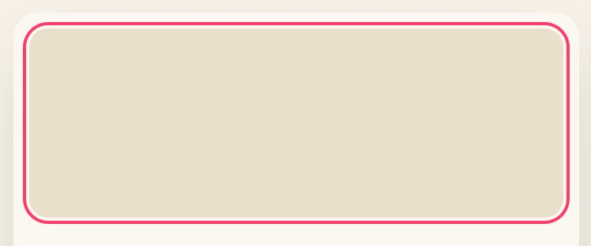
How to fixInner radius = outer radius − the gap:/coleoni-polish16 − 10 = 6px, orcalc(var(--r-lg) - var(--pad)). - A hard, black shadowFix
rgba(0, 0, 0, 0.5) 0px 2px 4px 0px: black at high opacity with little blur reads as a dirty edge, not depth.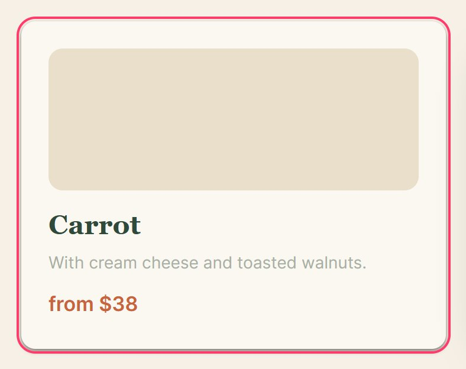
How to fixMore blur, low opacity (6 to 15%) and the brand's dark color instead of black./coleoni-polish - 15 spacings off the 4px gridFix
Values like
11px×7,5px×6,26px×5,13px×4,22px×4,23px×4,14px×3,18px×3. Almost equal to their neighbors on the scale, they create 1 to 3px misalignments.
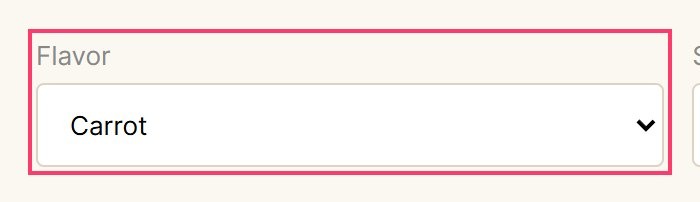
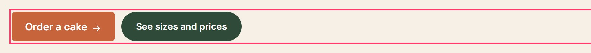
How to fixA spacing scale in multiples of 4 (/coleoni-polish4 8 12 16 24 32 48 64) and tokens for it. - 3 kinds of button that don't matchFix
Height, radius and font size:
46px · 6px · 15.5px,46px · pill · 14px,46px · 8px · 15px.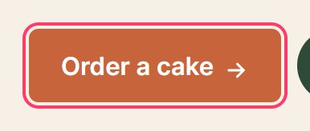

 How to fixOne button component with color variants (primary, secondary) and at most two sizes, same height and radius./coleoni-polish
How to fixOne button component with color variants (primary, secondary) and at most two sizes, same height and radius./coleoni-polish - 2 buttons with no hover stateFix
Nothing changes when the pointer is over them: they feel dead.

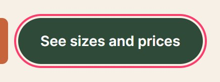
How to fixA subtle/coleoni-polish:hover(background 6 to 10% darker),:active1px down, and a 150mstransitionon the properties that change. - Icon off the text's centerFix
The icon sits 3.2px below the center of the text line.
 How to fixRemove manual margins on the icon and align with/coleoni-polish
How to fixRemove manual margins on the icon and align with/coleoni-polishdisplay:inline-flex; align-items:centeron the button. - 13 font sizes, 7 almost equalFix
In use:
121313.5141515.517182122232846. Pairs nobody can tell apart: 13/13.5, 13.5/14, 14/15, 15/15.5, 17/18, 21/22, 22/23.

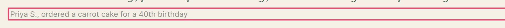
 How to fixA scale of 5 to 7 steps with a steady ratio (1.2 to 1.33), as/coleoni-type
How to fixA scale of 5 to 7 steps with a steady ratio (1.2 to 1.33), as/coleoni-typeremtokens: for example 13 · 15 · 17 · 21 · 28 · 44. - Lines too longFix
About 130 characters per line. Past 75, reading tires and the eye misses the next line.
 How to fix/coleoni-type
How to fix/coleoni-typemax-width: 34em(about 65 characters) on paragraphs. - 3 groups of almost identical colorsFix
#2F4A3A×7#2E4B3B×1#304A39×1#8A8F86×5#8B8F87×1#C8643B×4#C9663C×1
Nobody sees the difference; the code keeps both forever.
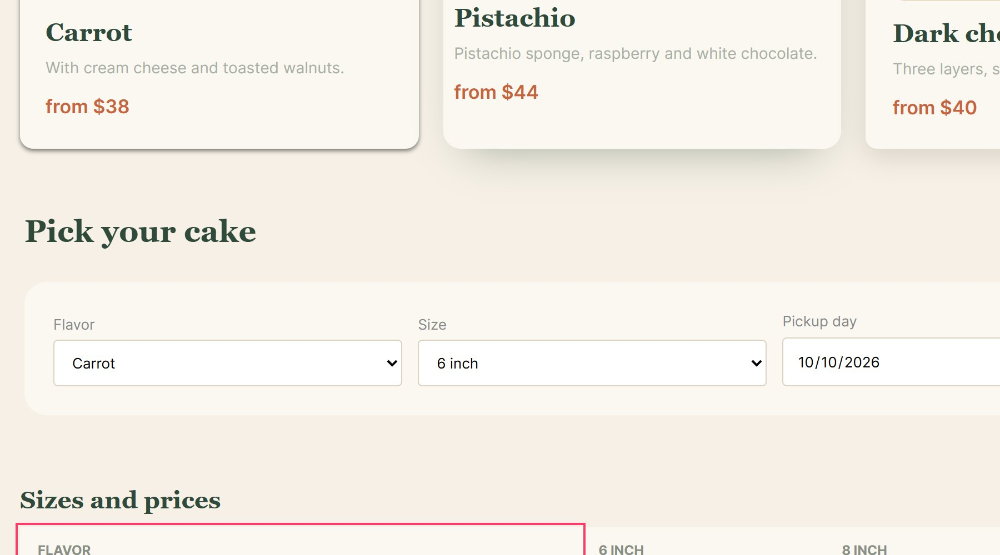
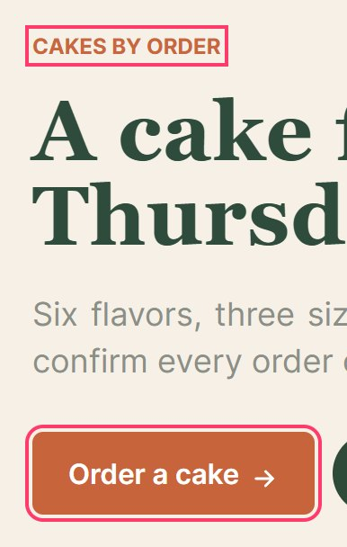
How to fixKeep the most used one in each group and make it a token./coleoni-color - 34 colors written straight into the CSSFix
34 of 34 color declarations use raw values instead of variables (0 use tokens). Changing the brand becomes a treasure hunt.
How to fixSemantic tokens (/coleoni-color--bg,--text,--accent…) on top of a scale; seepalette.css. - 2 edges that almost line upFix
30pxinstead of32px(-2px, 3 blocks)34pxinstead of30px(+4px, 3 blocks)
Nobody notices the number; everyone feels the page is crooked.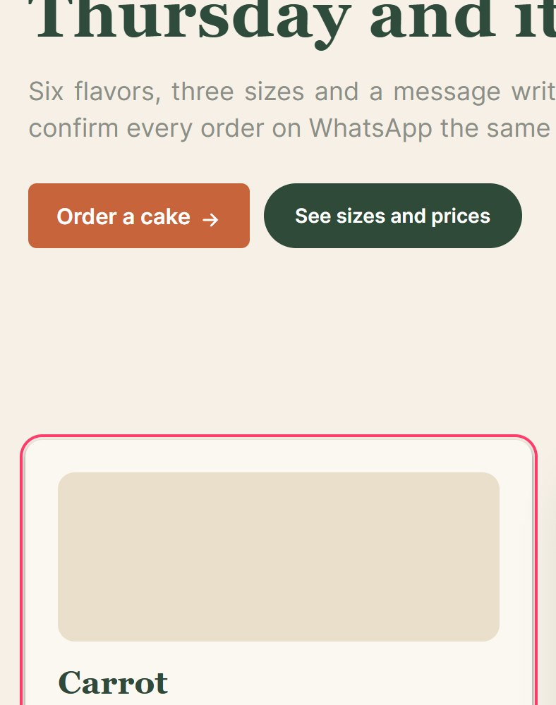
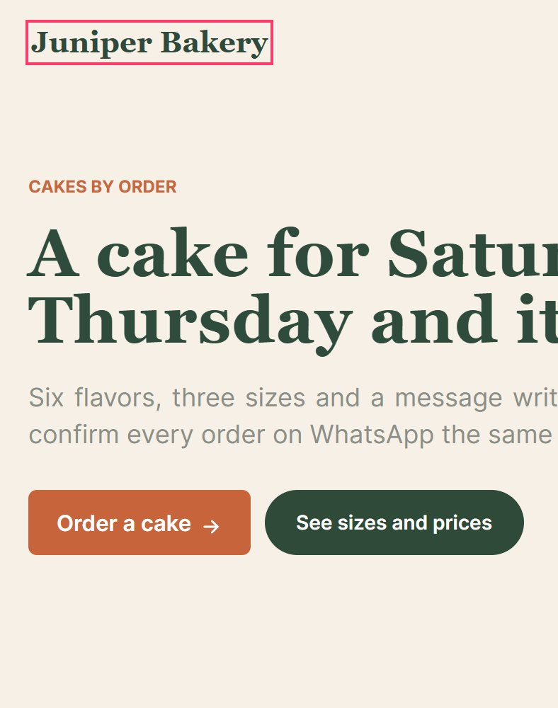
How to fixOne container (/coleoni-layoutmax-width+margin-inline: auto+ onepadding-inlinetoken) for every section, instead of padding per section. - No rhythm between sectionsFix
Gaps between sections:
72px→58px→64px→66px. Values this close look like mistakes.How to fixOne section spacing token (for example/coleoni-layout--s-8: 64px), and a bigger one only where the subject really changes. - All page content should be contained by landmarksFix
Ensure all page content is contained by landmarks
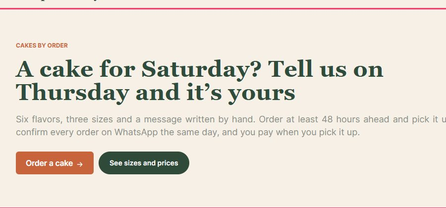
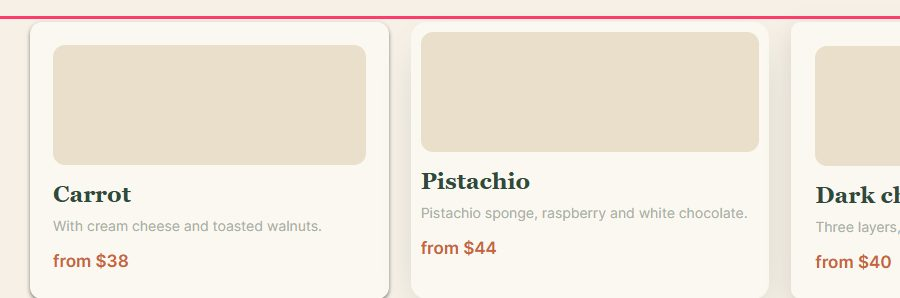
How to fixSome page content is not contained by landmarks/coleoni-a11y - Heading levels should only increase by oneFix
Ensure the order of headings is semantically correct
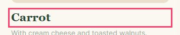
How to fixHeading order invalid/coleoni-a11y - Document should have one main landmarkFix
Ensure the document has a main landmark
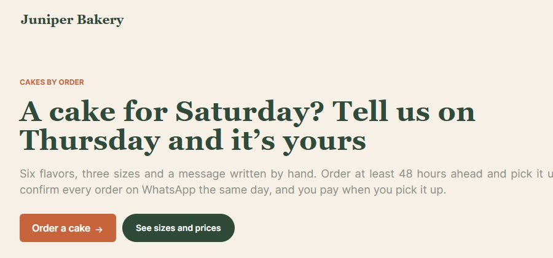
How to fixDocument does not have a main landmark/coleoni-a11y - Justified textWorth a look
Without hyphenation, the web opens gaps between words to fill each line.
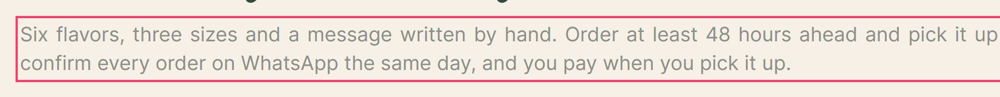
How to fix/coleoni-typetext-align: start. - Capitals without trackingWorth a look
Small capitals crowd each other without a little space between them.
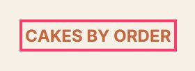
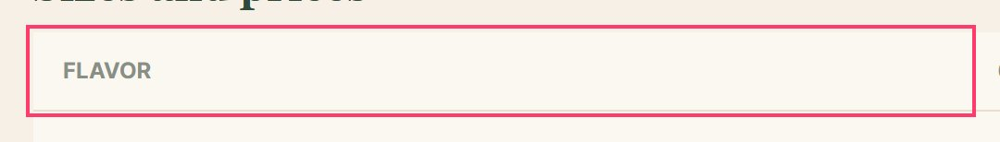
How to fix/coleoni-typeletter-spacing: .06emto.1emon uppercase labels. - Large heading with open trackingWorth a look
At 46px letters already look apart; positive tracking pushes them further.
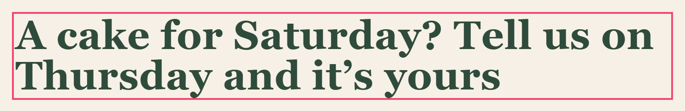
How to fix/coleoni-typeletter-spacing: -0.01emto-0.025emon large headings. - Numbers that don't line upWorth a look
Prices and amounts in columns with proportional digits: they don't stack under each other.
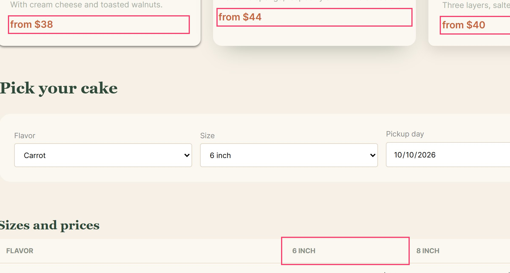
How to fix/coleoni-typefont-variant-numeric: tabular-numson tables, prices and totals. - No dark modeWorth a look
No
prefers-color-scheme: darkrule. Not required; if you want one, the tokens below include the dark version.How to fixTokens with light and dark values, switched by/coleoni-color@media (prefers-color-scheme: dark). - No skip linkWorth a look
The first Tab stop is not a link to the main content, so keyboard users go through the whole menu on every page.
WCAG 2.4.1How to fixAdd “Skip to content” as the first focusable element, pointing to <main id="content">. eMAG 1.5 asks for it./coleoni-a11y
Made by /coleoni-interface · skills.coleoni.com